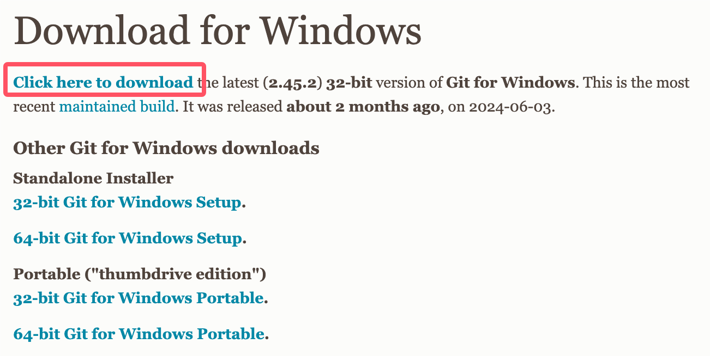
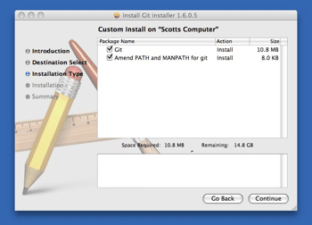

Git Installation and Configuration
Before using Git, we need to install Git first.
Git currently supports running on Linux/Unix, Solaris, Mac, and Windows platforms.
Git installation package download addresses for various platforms are:http://git-scm.com/downloads

Installation on Linux platform
Major Linux platforms can use package managers (apt-get, yum, etc.) to install.
The command to install the latest stable version of Git on Debian/Ubuntu is:
apt-get install git
Centos/RedHat
If your system is Centos/RedHat, the installation command is:
yum -y install git-core
Fedora installation command:
# yum install git (Fedora 21 及之前的版本) # dnf install git (Fedora 22 及更高新版本)
FreeBSD installation command:
pkg install git
OpenBSD installation command:
pkg_add git
Alpine installation command:
apk add git
Source installation
You can also download the source code package from the official website to install. The latest source package download address:https://mirrors.edge.kernel.org/pub/software/scm/git/。

You can also clone the source package from GitHub:
git clone https://github.com/git/git
Unzip and install the downloaded source package:
$ tar -zxf git-1.7.2.2.tar.gz $ cd git-1.7.2.2 $ make prefix=/usr/local all $ sudo make prefix=/usr/local install
Installation on Windows platform
Installing Git on Windows is just as easy. A project called msysGit provides an installation package. You can go to the GitHub page to download the exe installer and run it:
Installation package download address:https://gitforwindows.org/
You can also download directly from the official website:https://git-scm.com/download/win。

After downloading, double-click the installer, the interface opens as shown below, click the "next" button to start installation:

After installation is complete, you can use the command-line Git tool (which already comes with an SSH client), and there is also a graphical Git project management tool.
Find it in the Start menu"Git"->"Git Bash", a Git command window will pop up, and you can perform Git operations in that window.
Use the winget tool
If you have already installed winget, you can use the following command to install:
winget install --id Git.Git -e --source winget
Installation on Mac platform
Install via Homebrew:
brew install git
If you want to install git-gui and gitk (Git's commit GUI and interactive history browser), you can use homebrew to install:
brew install git-gui
You can also use a graphical Git installation tool, the download address is:
https://sourceforge.net/projects/git-osx-installer/
The installation interface is as follows:

Git Configuration
Git provides a feature calledgit configThe command is used to configure or read the corresponding working environment variables.
These environment variables determine Git's specific working methods and behavior in various aspects.
These variables can be stored in the following three different places:
-
/etc/gitconfigFile: configuration that is universally applicable to all users in the system. If usinggit configwhen used--systemoption, it reads and writes this file. -
~/.gitconfigFile: The configuration file in the user directory only applies to that user. If usinggit configwhen used--globaloption, what is read and written is this file. - The configuration file in the Git directory of the current project (that is, in the working directory's
.git/configFile): The configuration here is only valid for the current project. Each level of configuration overrides the same configuration at the upper level, so.git/configThe configuration therein will override/etc/gitconfigthe variable of the same name therein.
On Windows, Git looks for the .gitconfig file in the user's home directory. The home directory is the directory specified by the $HOME variable, usually C:\Documents and Settings\$USER.
In addition, Git will also try to find the /etc/gitconfig file, but the root directory used to locate it depends on which directory Git was originally installed in.
userInformation
Configure your personal user name and email address. This is to record the committer's information every time you commit code:
git config --global user.name "example" git config --global user.email test@example.com
ifUsed--globaloption, then the configuration file to be changed is the one located in your user home directory. From then on, all your projects will use the user information configured here by default.
If you want to use a different name or email in a specific project, simply remove the --global option and reconfigure; the new settings are saved in the current project's .git/config file.
Text Editor
Set the default text editor used by Git. Usually it may be Vi or Vim. If you have other preferences, such as VS Code, you can reset it:
git config --global core.editor "code --wait"
Difference analysis tool
Another common setting is which diff analysis tool to use when resolving merge conflicts. For example, if you want to switch to vimdiff:
git config --global merge.tool vimdiff
Git YesUnderstanding kdiff3，tkdiff，meld，xxdiff，emerge，vimdiff，gvimdiff，ecmerge, and opendiff waitMergeToolsofOutput information。
Of course, you can also specify your own custom tool. For details, refer to Chapter 7.
View configuration information
To check existing configuration information, you can usegit config --listCommand:
$ git config --list http.postbuffer=2M user.name=example user.email=test@example.com
Sometimes you may see duplicate variable names, which means they come from different configuration files (such as /etc/gitconfig and ~/.gitconfig), but in the end Git actually uses the last one.
We can also view these configurations in~/.gitconfigor/etc/gitconfigas shown below:
vim ~/.gitconfig
The displayed content is as follows:
[http]
postBuffer = 2M
[user]
name = example
email = test@example.com
You can also directly check the setting of a specific environment variable by appending the specific name after it, like this:
$ git config user.name example
Generate SSH key (optional)
If you need to perform Git operations via SSH, you can generate an SSH key and add it to your Git hosting service (such as GitHub, GitLab, etc.).
ssh-keygen -t rsa -b 4096 -C "your.email@example.com"
Follow the prompts to complete the generation process, then add the generated public key to the corresponding platform.
Verify Installation
Run the following command in the terminal or command line to ensure Git is correctly installed and configured:
git --version git config --listother extensions